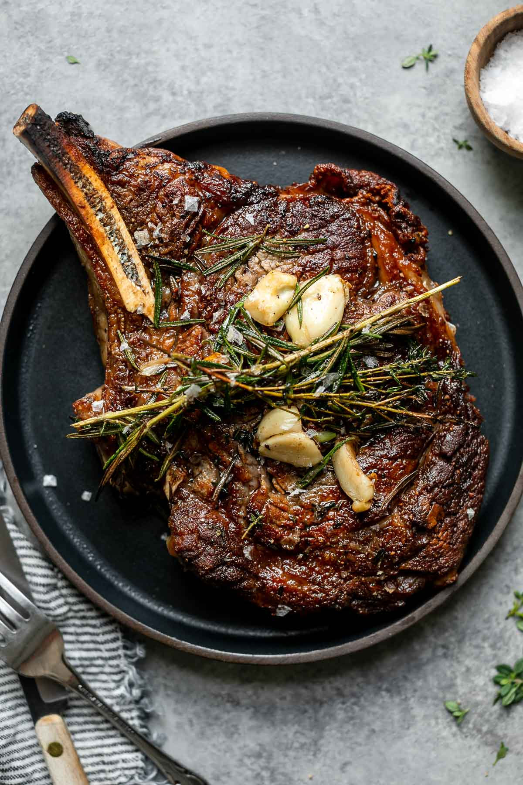

Butter Basted Steak

Ingredients
- Steak
- Butter
- Garlic
- Rosemaryt
Steps
- Get a heavy bottom pan REALLY hot
- Put steak on pan leave alone for 2-3 minutes
- if nice crust has formed flip steak and leave it for half the time.
- add butter garlic and rosemary then baste until steak reaches doneness.